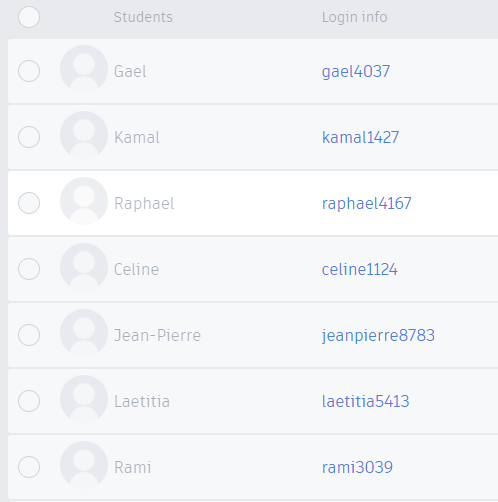
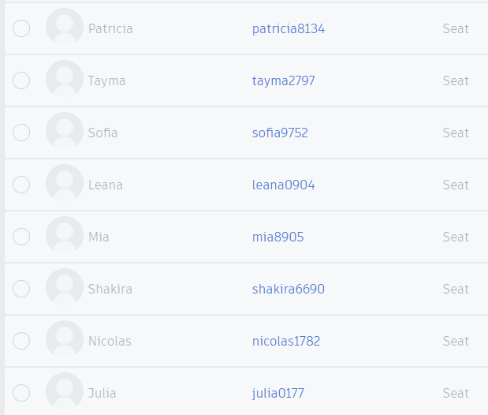
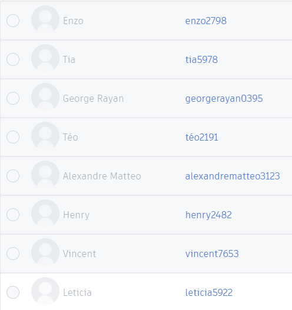
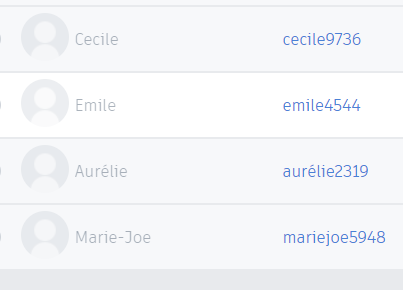

3e
La poubelle connectée
2020-2024
Modélisation 3d de la poubelle
Connectez vous à : lm-administration pour regarder les vidéos ci-dessous
id: labo.eval
pass: le@2023
Lancez Tinkercad et saisissez le code de la classe: 1LT3GM14K6FY
ou bien directement:
https://www.tinkercad.com/joinclass/1LT3GM14K6FY
Vous trouvez c-dessous vos identifiants pour accéder à la classe:




🧠 Teste tes connaissances
Réponds aux questions puis clique sur « Vérifier » — la correction s'affiche aussitôt.
1. Quel logiciel est utilisé pour réaliser la modélisation 3D de la poubelle ?
2. Comment rejoindre la classe de modélisation 3D dans Tinkercad ?